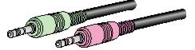

Een headset gebruiken
U kunt een USB-headset of een analoge headset gebruiken met Cisco IP Communicator.
- Een USB-headset heeft een platte, rechthoekige stekker die kan worden aangesloten op uw computer.
- Een analoge headset heeft ronde stekkers die u kunt aansluiten op de audioaansluitingen van de computer.


Analoge headsets werken met de geluidskaart van de computer en hiervoor zijn geen apparaatstuurprogramma's vereist.
In deze tabel wordt beschreven hoe u een headset gebruikt voor het plaatsen en ontvangen van gesprekken.
Tip Automatisch beantwoorden is een speciale functie die de systeembeheerder kan inschakelen als u een groot aantal binnenkomende gesprekken ontvangt of als u gesprekken namens iemand anders afhandelt. Wanneer Automatisch beantwoorden is ingeschakeld, worden gesprekken met Cisco IP Communicator automatisch beantwoord en worden ze via de luidsprekermodus of de headsetmodus geleid, afhankelijk van de configuratie.
Verwante onderwerpen
Copyright © 2009 Cisco Systems, Inc. Alle rechten voorbehouden.